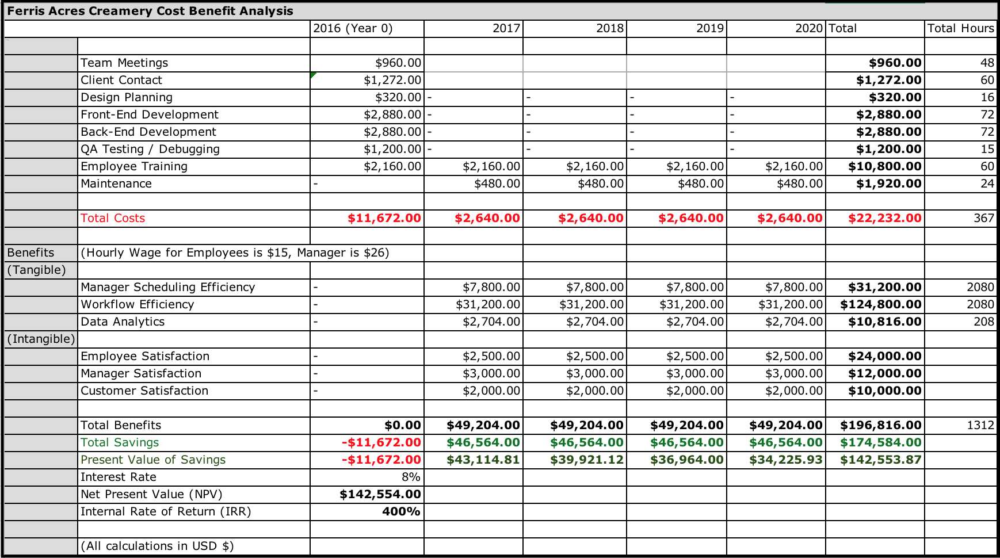

During operations, one staff member is dedicated to taking orders by phone. While this system works for prepacked pints and quarts, it has not scaled well for cake orders. Each order takes at least 15 minutes as the employee guides the customer through a myriad of options. Cakes themselves take an additional 40 minutes of preparation time.
Ferris Acres Creamery is small, family owned ice cream shop located in Southwest Connecticut. The shop itself is unique because it is located within the farm. Visitors are treated to an authentic dairy farm experience, complete with daily cow crossings, a chance to interact with the animals, as well as fresh ice cream created from milk on the farm. Since its opening, the ice cream shop has been a massive success , requiring resources to be pulled from the primary farming business to support it. Numerous local businesses sell the ice cream, and demand continues to grow.
Our initial on site meeting with Mrs. Ferris established the project goals and expectations. It also provided us with a detailed view of the necessary requirements which we used to define the project scope.

The final product consists of two interfaces – a customer facing interface and a client facing interface. We decided to build a service-oriented platform on Node JS, which allowed the customer and administrative interface to be built as an online, responsive order form across multiple devices. The customer facing interface has a clean responsive design and is optimized to be used on touch based devices. The client interface places more emphasis on functionality rather than design as it will be used by employees internally. The key aspect of this interface is the database that stores all of the cake and ice cream orders.
I conducted a cost-benefit analysis (CBA)
to assess the feasibility of the project and to measure the increased efficiency and lowered operational
costs. In actuality, we did not receive any payment and this was simply a tool to quantify the
projected benefits and to see how practical it would be to implement.
By using a risk-adjusted model, I estimated the
internal rate of return (IRR) to be 400% over a five year period. The total cost to be incurred over
the same period was estimated to be $22,000, but with an increase in revenue of nearly $200,000. Furthermore,
the team also estimated that Ferris Acres would
save at least 1000 man hours in their efforts in collecting cake orders.

Our project resulted in an online ordering form that customers can use to purchase ice cream cakes as well as pints, and
a client-facing dashboard displaying all the orders. We made all of our major deadlines and accomplished
our outlined requirements, despite losing a teammate. We kept the interface simple and clean, for ease-of-use
for both the client and her customers. It was important that her
older clients who might not have as much technical experience would be able to use the form. The client-facing
interface was also kept simple to keep it intuitive, so it would be
easy to train a new employee on the system since Ferris Acres has high staff turnover.
Mrs. Ferris was satisfied with the deliverables, although
she noted a couple of outstanding issues, including incorporating all of the data onto our solution.
Mrs. Ferris does not think that the application is ready to go live, as there is currently
no way to handle payments. She would like to integrate Square with the online ordering system because
her pick up window is not equipped to process sales. It is also
important that the orders placed online have been pre-paid, to reassure Mrs. Ferris will be compensated
for her products.
An online ordering system would be extremely beneficial to the Creamery, as shown through the CBA. Despite all of the challenges, I was proud of what we had accomplished. Unfortunately we were unable to test a MVP with real customers, but we had created the framework and showed Mrs. Ferris the benefit this would have on her business.